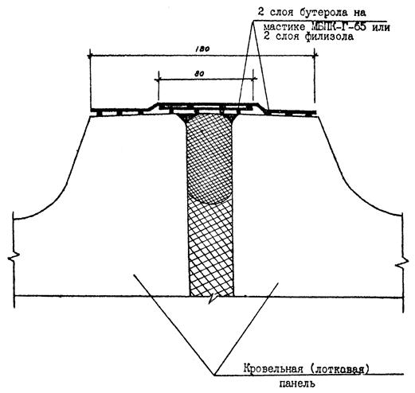
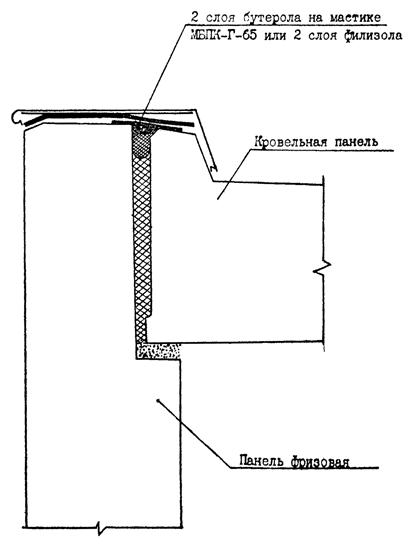
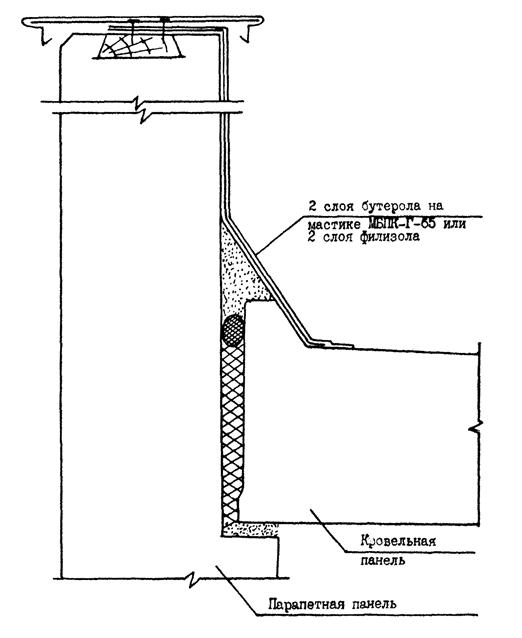

ДЕПАРТАМЕНТ СТРОИТЕЛЬСТВА
НАУЧНО-ТЕХНИЧЕСКОЕ УПРАВЛЕНИЕ
ИНСТРУКЦИЯ ПО УСТРОЙСТВУ КРОВЕЛЬ ТИПОВЫХ ЖИЛЫХ ДОМОВ С ПРИМЕНЕНИЕМ ПОЛИМЕРНЫХ МАСТИЧНЫХ И РУЛОННЫХ ГИДРОИЗОЛЯЦИОННЫХ МАТЕРИАЛОВ
ВСН 12-94
Москва - 1995
Разработана лабораторией подземных сооружений и кровель НИИМосстрой (зав. лабораторией Б. В. Ляпидевский; научный сотрудник А. Б. Вальницев) при участии Мосстройлицензии (Ю. И. Столяров, к. т. н. В.Д. Фельдман).
Внесена НИИМосстроем Департамента строительства. Подготовлена к утверждению Научно-техническим управлением Департамента строительства (начальник управления Н. Н. Никонов).
С введением в действие «Инструкции по устройству кровель типовых жилых домов с применением полимерных мастичных и рулонных гидроизоляционных материалов (ВСН 12-94) утрачивает силу ВСН 204-85.
Инструкция согласована с ХМК «Главмосстрой», МНИИТЭП, ДСК-1.
|
Департамент строительства |
Ведомственные строительные нормы |
ВСН 12-94 |
|
Научно-техническое управление |
Инструкция по устройству кровель типовых домов с применением полимерных мастичных и рулонных гидроизоляционных материалов |
Взамен ВСН 204-85 |
1.1. Настоящая инструкция составлена в соответствии со СНиП П-26-75 «Кровля. Нормы проектирования» и СНиП 3.04.01-87 «Изоляционные и отделочные покрытия» и содержит требования, предъявляемые к производству работ по устройству гидроизоляции стыковых соединений мастичной (безрулонной) кровли домов серии П 44/17, возводимых Домостроительным комбинатом № 1.
1.2. Монтаж кровельных железобетонных элементов производят в соответствии с рабочими чертежами домов серий П 44/17, разработанными МНИИТЭПом, технологическими картами, «Инструкцией по монтажу 16-этажных крупнопанельных жилых домов из унифицированных изделий Единого каталога серии П 44/16, возводимых ДСК-1» (ВСН 170-80 Главмосстроя).
1.3. Все материала, кроме филизола, используемые для гидроизоляции стыковых соединений мастичной (безрулонной) кровли домов серии П 44/17, указанные в главе 2 настоящей инструкции, разрешены к применению в строительстве при согласовании предыдущих ВСН 204-85.
|
Внесена НИИМосстроем |
Утверждена Научно-техническим управлением Департамента строительства 29 декабря 1994 г. |
Срок введения в действие |
2.1. Для устройства гидроизоляции стыков и мест примыканий мастичной (безрулонной) кровли домов серии П 44/17 необходимо применять следующие материалы:
рубероид марок РПП-350 и РКК-420 (ГОСТ 10923-82);
самоклеящаяся лента «Герлен-Д», без холста, шириной 200 мм (ТУ 400-1-165-79);
рулонный гидроизоляционный материал «Бутерол» (ТУ 400-2-424-88);
филизол марок «В» и «Н» (ТУ 400-1-409-2-89)
мастика наиритовая (ТУ 38-3-043-87);
мастика битумно-полимерная кровельная (ТУ 400-2-190-74**);
мастика тиоколовая марок АМ-0,5 и КБ-0,5 (ТУ 84-246-85);
грунтовка:
- герметик высыхающий 51-Г-18 (ТУ 400-1-137-78);
- эмульсия быстрораспадающаяся битумно-полимерная ББЭ (ТУ 400-24-113-78);
- праймер (разжиженный битум);
прокладка пенополиэтиленовая уплотняющая марки «Вилатерм-СП» (ТУ 6-05-2049-87);
растворители марок Р-4 и Р-5 (ГОСТ 7827-74);
плиты теплоизоляционные из минеральной ваты (ГОСТ 9573-82);
эмульсия ЭГИК-У (ТУ 400-24-111-77).
2.2. Грунтовку из жидкого битума приготовляют путем трех-четырехкратного разжижения битума, нагретого до температуры + 60° - + 80 °С, быстро и медленно испаряющимися растворителями.
2.3. Тиоколовые герметики АМ-0,5 и КБ-0,5 приготовляются из двух составляющих - пасты и отвердителя. Соотношение между составляющими указывается в паспорте партии герметика.
Приготовление герметика должно производиться только при положительных температурах окружающей среды. Перемешивание составляющих производится электросверлилкой марки ЭИ-1022А, оборудованной смесительной насадкой в виде лопастей. Перемешивать герметик вручную и разжижать его растворителем запрещается.
2.4. Защитные фартуки выполняют из оцинкованной кровельной стали толщиной 0,5 - 0,8 мм (ГОСТ 14918-80).
2.5. Все материалы для устройства гидроизоляции должны соответствовать требованиям соответствующих ГОСТов и ТУ.
3.1. Перед устройством гидроизоляции стыков и мест примыканий производят визуальный осмотр гидроизоляционного покрытия из эмульсии ЭГИК-У. Все поврежденные места должны быть отремонтированы после окончания всех гидроизоляционных работ на кровле. Ремонт производят с применением эмульсии ЭГИК-У, которую наносят кистью на поврежденную поверхность.
3.2. Перед монтажом кровельных панелей на ребро лотковых панелей наклеивают Вилатерм-СП на мастике. Сначала наносят слой мастики толщиной 1 мм и на панель, и на прокладку, выдерживая до «отлипа», затем - второй слой, также выждав до «отлипа». После этого на панель укладывают прокладку, обмазав ее слоем мастики толщиной 1 мм, и только после указанных операций устанавливают кровельные панели. Изнутри стык заделывают цементным раствором М-50.
3.3. Стыки между смежными панелями лотка и кровли заполняют прокладкой Вилатерм-СП, затем на всю высоту - минераловатным утеплителем, а сверху наклеивают еще одну уплотнительную прокладку Вилатерм-СП в обмазке мастикой (рис. 1).
3.4. Стыки в местах примыкания кровельных панелей к фризовым (рис. 3) и парапетам (рис. 3) на всю высоту заполняют минераловатным утеплителем и сверху уплотняют прокладкой Вилатерм-СП.
3.5. Стыки между кровельными панелями и вентиляционными шахтами снаружи уплотняют прокладкой Вилатерм-СП и заделывают цементным раствором М-50 с образованием выкружки или скоса.
3.6. Стыки между кровельными панелями и панелями машинных отделений лифтов снаружи уплотняют прокладкой Вилатерм-СП.
3.7. Перед приклейкой гидроизоляционных материалов все места должны быть очищены от грязи, остатков раствора, тщательно высушены и огрунтованы эмульсией ББЭ или праймером.
3.8. Перед нанесением тиоколовых мастик АМ-0,5, КБ-0,5, невысыхающего герметика 51-Г-18 предварительно необходимо все места обработать растворителем Р-4 или Р-5.
3.9. Рубероид доставляют на кровлю в рулонах (для гидроизоляции мест примыканий кровельных панелей к парапетам), а также нарезанным на полосы шириной 180 мм (для гидроизоляции остальных стыковых соединений).
4.1. Гидроизоляцию стыков между кровельными панелями и лотком, а также кровельными панелями и панелями машинного отделения выполняют с применением тиоколового герметика. Герметик наносят малярным шпателем, толщиной 2 - 3 мм, шириной не менее 20 мм с каждой стороны кромки стыка. Температура герметика в момент нанесения должна быть в пределах 15 - 20 °С. Температура наружного воздуха при работе с герметиком должна быть не ниже - 10 °С.
4.2. Рубероид приклеивают на стыки и места примыканий на горячей битумно-полимерной мастике. Перед наклеиванием рулонных материалов стык заполняют битумно-полимерной мастикой заподлицо с верхними плоскостями ребер кровельных или лотковых элементов.
4.3. При наклеивании ленты «Герлен-Д» необходимо соблюдать следующую последовательность операций:
а) произвести зачистку кромок стыка металлическими щетками, ветошью и растворителем Р-4 или Р-5;
б) освободить рулон ленты от защитной бумаги на 20 - 30 см, приклеить на мастике к кромкам и прикатать роликом;
в) попеременно освобождая ленту от бумаги, приклеить и прикатать роликом;
г) за 20 - 30 см до конца стыка отмерить кусок ленты нужной длины, после чего - отрезать его ножом.
Во избежание загрязнения снимать защитную бумагу с ленты «Герлен-Д» на всю длину отрезанного куска запрещается.
4.4. Перед приклейкой ленты «Герлен-Д» стык заполняют битумно-полимерной мастикой заподлицо с верхними плоскостями ребер кровельных или лотковых элементов.
4.5. Гидроизоляцию стыков между лотковыми элементами, а также между кровельными панелями и стыков между фризовой и кровельной панелями выполняют из ленты «Герлен-Д» и двух слоев рубероида. Сначала наклеивают ленту «Герлен-Д» (см. п. 4.3), затем слой рубероида марки РПП-350 шириной 80 мм, а на него - в качестве верхнего слоя - рубероид марки РКК-420 шириной 180 мм. После приклейки каждого слоя необходимо тщательно прикатывать рубероид и промазывать кромки.
4.6. Гидроизоляцию стыков между кровельными панелями и парапетом выполняют из трех слоев рубероида с тщательной прикаткой каждого слоя и промазыванием кромок. Сначала наклеивают два слоя рубероида марки РПП-350, затем сверху наклеивают слой рубероида марки РКК-420.
4.7. Гидроизоляционный ковер заводят за парапет и прикрепляют оцинкованными шурупами с шагом 600 мм к деревянным брускам, заложенным в верхней поверхности парапета.
4.8. Ширина нахлестки вдоль оси стыка во всех случаях должна быть не менее 100 мм.
4.9. Гидроизоляцию стыков между кровельными панелями и вентиляционными шахтами выполняют из одного слоя ленты «Герлен-Д».
4.10. Стыки между кровельными и фризовыми панелями после устройства гидроизоляция закрывают фартуками из оцинкованной стали, фартуки при помощи гвоздей крепят к деревянным брускам, заложенным в верхней части фризовой панели.
4.11. В местах примыкания кровельных панелей к парапету устанавливают сливы из оцинкованной стали на верхней кромке парапета и прикрепляют с помощью костылей к деревянным брускам, заложенным в парапет.
4.12. В местах примыкания вентиляционной шахты к кровельным панелям внутри шахты устанавливают фартук из оцинкованной стали, который крепят кровельными оцинкованными гвоздями К 3,5×40 к деревянным брускам в панелях покрытия.
5.1. Работы по гидроизоляции стыков и мест примыканий мастичной (безрулонной) кровли должны выполняться под контролем технического персонала монтажного управления.
5.2. Качество гидроизоляционных материалов должно контролироваться лабораторией домостроительного комбината. Постоянный контроль осуществляется путем проверки паспортных данных на соответствие ТУ или ГОСТу (с этой целью один раз в квартал необходимо проводить испытания материалов).
5.3. Качество приклейки ленты «Герлен-Д» определяют визуальным осмотром: не должно быть вздутий, отслоений, кромки должны плотно прилегать к основанию.
Качество сцепления ленты «Герлен-Д» с основанием проверяют выборочно (1 стык на секцию) перед наклеиванием рубероида. Проверку выполняют путем медленного отрыва ленты от основания. При качественном сцеплении происходит разрыв по ленте.
5.4. Все места, подвергнутые проверке, должны быть отремонтированы. В случае отрыва ленты от основания необходимо снимать ее до тех пор, пока не произойдет разрыв по ленте. После этого на стык необходимо наклеить новую ленту с нахлесткой по 10 см в местах стыковки.
5.5. Качество наклеивания отдельных слоев рубероида в гидроизоляцию определяют путем визуального осмотра, при этом:
а) не должно быть вздутий, отслоений и других дефектов;
б) рубероид следует приклеить без пропусков;
в) кромки должны быть тщательно промазаны и приглажены.
5.6. Контроль качества гидроизоляции стыков тиоколовым герметиком следует осуществлять пооперационной проверкой:
а) подготовки бетонной поверхности перед нанесением герметика;
б) температуры герметика;
в) толщины и непрерывности слоя герметика.
6.1. Гидроизоляцию стыков и мест примыканий выполняют путем наклеивания двух слоев бутерола на битумно-полимерной мастике или на бутил-наиритовой мастике (взамен гидроизоляции из ленты «Герлен-Д» и двух слоев рубероида или трех слоев рубероида).
6.2. Перед устройством гидроизоляции стык заполняют согласно проекту (см. пп. 3.3, 3.4, 3.5).
6.3. Перед приклейкой бутерола стыки очищают от грязи, пыли, мусора и при необходимости просушивают.
6.4. Бутерол нарезают полосами шириной 80 мм для нижнего слоя и 180 мм - для верхнего.
6.5. Гидроизоляцию стыков между кровельными панелями и лотком, между панелями кровли и машинного помещения, между кровельными панелями и вентиляционной шахтой выполняют так же, как и при гидроизоляции стыков рубероида (см. пп. 4.1 и 4.10).
6.6. Гидроизоляцию стыков между кровельными панелями, лотковыми панелями (рис. 1), а также стыков между фризовыми и кровельными панелями (рис. 2) и стыков между парапетной и кровельной панелью (рис. 3) выполняют в следующей последовательности:
а) произвести огрунтовку поверхностей стыков ББЭ или праймером, или другими полимерсодержащими составами типа 51-Г-18;
б) при наклеивании полос бутерола на мастику МБПК-Г-65 заполнить стык битумно-полимерной мастикой заподлицо с верхними плоскостями ребер кровельных или лотковых панелей;
в) в случае приклейки полос бутерола на герметике 51-Г-18 наносить этот состав кистью на приклеиваемую поверхность за два раза с последующей задержкой в течение 20 - 30 мин до «отлипа»;
г) наклеить на стык полосу бутерола шириной 80 мм и пригладить деревянным шпателем;
д) наклеить на стык полосу бутерола шириной 180 мм и также пригладить деревянным шпателем;
е) покрыть верх и кромки бутерола слоем мастики МБПК-Г-65 толщиной 1 - 2 мм.
6.7. Гидроизоляцию стыков между кровельными панелями и парапетом выполняют путем наклеивания трех слоев рубероида, двух слоев бутерола с заводкой их на верхнюю поверхность парапета.
6.8. Оцинкованные сливы и фартук устанавливают строго в соответствии с проектом производства работ.
6.9. Контроль качества гидроизоляции о применением бутерола производят аналогично контролю качества гидроизоляции из рубероида (см. раздел 5 настоящей инструкции).
7.1. Гидроизоляцию стыков и мест примыканий выполняют путем наклейки двух слоев филизола (нижний слой марки «Н», верхний слой марки «В») с подплавлением покровного слоя с помощью газовых горелок.
7.2. Перед устройством гидроизоляции стыки заполняют согласно ППР (см. пп. 3.3, 3.4, 3.5).
7.3. Перед наклейкой филизола стыки очищают от грязи, пыли, мусора и, при необходимости, просушивают.
7.4. Филизол нарезают полосами шириной 80 мм для нижнего слоя и 180 - для верхнего.
7.5. Гидроизоляцию стыков между кровельными панелями и лотком, между панелями кровли и машинного помещения, между кровельными панелями и вентиляционной шахтой выполняют также, как и при гидроизоляции стыков рубероидом (см. пп. 4.1 и 4.10).
7.6. Гидроизоляцию стыков между, кровельными панелями, между лотковыми панелями (рис. 1), фризовой панелью и кровельной (рис. 2) выполняют в следующей последовательности:
а) наклеивают на стык полосу филизола шириной 80 мм и приглаживают деревянным шпателем;
б) наклеивают на стык полосу филизола шириной 180 мм и приглаживают деревянным шпателем;
в) прогревают кромки материала и заглаживают шпателем.
7.7. Гидроизоляцию стыков между кровельными панелями и парапетом выполняют путем наклеивания двух слоев филизола с заводкой на верхнюю поверхность парапета (рис. 3).
7.8. Оцинкованные сливы и фартуки устанавливаются строго в соответствии с проектом.
7.9. Контроль качества гидроизоляции с применением филизола производят аналогично контролю качества гидроизоляции из рубероида (см. раздел 5 настоящей инструкции).
8.1. При производстве работ по устройству гидроизоляции стыков и мест примыканий мастичной (безрулонной) кровли необходимо выполнять требования следующих нормативных документов: СНиП III-4-80 «Правила техники безопасности в строительстве», пп. 8 и 15; «Правила пожарной безопасности при производстве строительно-монтажных работ» (утв. ГУПО МВД СССР - 04.11.77г.) (М., Стройиздат, 1978, с.17 - 22).
8.2. К работам по гидроизоляции стыков и мест примыканий допускаются мужчины не моложе 18 лет, прошедшие согласно приказу Министерства здравоохранения СССР № 700-69 предварительный и периодический медицинские осмотры в установленные Минздравом СССР сроки, а также инструктажи по технике безопасности и по соблюдению противопожарных требований на рабочем месте.
8.3. К работам по заполнению стыков между железобетонными элементами (с применением герметика 51-Г-18) допускаются рабочие, обученные соответствующей специальности и правилам техники безопасности работ с применением клеев, сдавшие экзамен и получившие удостоверение на право производства работ.
8.4. До прохождения специального обучения по технике безопасности рабочие к самостоятельной работе с применением герметика 51-Г-18 не допускаются. Проверка знаний рабочих производится ежегодно. Допуск рабочих к выполнению работ разрешают после осмотра прорабом или мастером мест производства работ с определением, при необходимости, мест и способов закрепления страховочных концов.
8.5. Выполнять работу о применением герметика 51-Г-18, растворителей Р-4 и Р-5 рабочий обязан в выданной спецодежде и обуви. Для защиты рук следует применять резиновые перчатки. Для защиты органов дыхания должен применяться универсальный респиратор РУ-60. Рабочая и домашняя одежда должна храниться в отдельных шкафчиках.
8.6. Вынос спецодежды и обуви, выданной для производства работ с герметиком 51-Г-18, за пределы объекта и посещение в этой одежде пунктов питания запрещается.
8.7. Работы с использованием герметика 51-Г-18 на кровле должны производиться под непосредственным руководством назначенного приказом инженерно-технического работника. Последний должен тщательно проследить и проверить собственноручно, чтобы зона работ была обесточена, а все операции технологического цикла - производились только с наветренной стороны.
8.8. При производстве работ с применением герметика 51-Г-18 запрещается:
а) приступать к работе без наряда-допуска;
б) допускать к месту производства работ посторонних людей;
в) курить на рабочем месте;
г) хранить пустую тару на месте производства работ;
д) принимать пищу и хранить продукты в местах производства работ.
8.9. При появлении на коже зуда или красноты от случайного попадания клея пораненное место необходимо промыть теплой водой с мылом и обратиться к врачу.
8.10. Перед приемом пищи необходимо тщательно вымыть руки и лицо теплой водой, прополоскать рот.
8.11. Герметик 51-Г-18, а также растворители Р-4 и Р-6 содержат летучие вредные вещества в количествах:
1. 51-Г-18:
толуол - 10 %
(расход на секцию - около 30 кг).
2. Р-4:
бутилацетат - 12 %
ацетон - 26%
толуол , - 62%
(расход на секцию - около 2 кг).
3. Р-5:
бутилацетат - 30 %
ацетон - 30 %
ксилол - 40 %
(расход на секцию - около 2 кг).
Некоторые летучие вредные вещества действуют как наркотик, поражая центральную нервную систему (ацетон, толуол, ксилол); другие раздражают слизистые оболочки глаз и дыхательных путей (этилацетат бутилацетат, бензин).
8.12. До начала производства работ по наклеиванию рулонных материалов рабочие должны быть обучены безопасным приемам ведения работ, аттестованы и иметь удостоверение (в том числе по использованию электроинструмента). Применять электроинструмент разрешается только при нахождении на кровле не менее двух человек.
8.13. Нанесение герметика 51-Г-18, растворителей Р-4 и Р-5 следует производить кистями с рукояткой длиной не менее 1,80 м.
8.14. При попадании битума на кожу рекомендуется использовать вазелиновое масло. Запрещается пользовать высокотоксичные растворители (бензин, четыреххлористый углерод и т. п.).
8.15. Гидроизоляционные работы выполняются при температуре наружного воздуха не ниже - 10 °С, при температуре до - 30 °С с выполнением дополнительных мероприятий. Во время тумана, гололеда, дождя, сильного ветра и температуры наружного воздуха ниже - 30 °С запрещается проводить работы по заполнению стыков и наклейке рулонных материалов.
8.16. Место производства работ должно быть обеспечено следующими средствами пожаротушения и средствами медицинской помощи (из расчета на одну секцию кровли):
пенный огнетушитель марки СУ-5 (ГОСТ 7276-77*) - 2 шт.;
ящик с песком 0,05 м3 - 1 шт.;
лопаты - 22 шт.;
асбестовое полотно - 1 м2;
аптечка с набором медикаментов - 1 шт.
8.17. Во время работ по устройству гидроизоляции стыков и мест примыканий мастичной (безрулонной) кровли должны проводиться не реже двух раз в год анализы воздуха в зоне производства гидроизоляционных работ на содержание в нем токсичных веществ (ароматические, непредельные углеводороды, серосодержащие соединения и т. д.).
8.18. Организация проведения анализа воздуха в зоне производства гидроизоляционных работ возлагается на администрацию строительных организаций, производящих работы по устройству кровель.
8.19. Рабочие, занятые на устройстве мастичной (безрулонной) кровли, должны быть обеспечены санитарно-бытовыми помещениями в соответствии с «Инструкцией по проектированию бытовых зданий и помещений строительно-монтажных организаций» (СН 276-74).
1. Электрическая сверлильная машина ИЭ-1022А (с насадкой в виде лопастей).
2. Щетка кровельная (Р.Ч. ДК-88 треста Оргстрой Минстроя ЭССР).
3. Шпатель с пластмассовой ручкой ШП-250 (ГОСТ 10778-83).
4. Шпатель с клиновым полотном и деревянной ручкой ШКД-130 (ГОСТ 10778-83).
5. Нож линолеумный для резки рулонных материалов (ТУ 400-28-187-76. Извещение № 1).
6. Молоток плотничный МПЛ (ГОСТ 11042-83).
7. Кисть-макловица (Рукоять - 1,8 м) - ГОСТ 10597-80.

Рис. 1. Стык между кровельными панелями; лотковыми панелями

Рис. 2. Стык между панелью и кровельной панелью

Рис. 3. Стык между парапетной панелью и кровельной панелью
СОДЕРЖАНИЕ